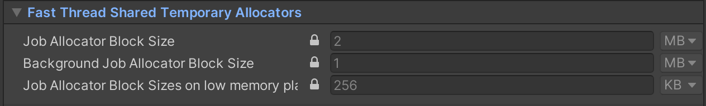

This example uses the memory usage reports that Unity writes to the log when you close the Player or Unity Editor. To create this report, use the -log-memory-performance-stats command line argument. To find your project’s log files, follow the instructions on the log files page.
This allocator allocates blocks of memory, then linearly allocates memory within those blocks. Unity holds the available blocks in a pool. When one block is full, the allocator fetches a new block from the pool. When the allocator no longer needs the memory in a block, it clears the block, and the block returns to the pool of available blocks.
You can customize the block size. Unity rounds the block size up to the nearest power of two. The allocator allocates up to 64 blocks, as needed. To fit an allocation that’s larger than the block size, a block can grow to up to eight times the block size.
The allocator only grows. After the allocator creates a block, it keeps the memory for that block until the application closes, even if the block is empty. The memory that the allocator reserves is therefore the peak amount of memory it needed at any point while the application ran, not the amount it currently uses.

If all blocks are in use, or an allocation is too big for a block, the allocation falls back to the main heap allocator, which is much slower than the job allocator. A few overflow allocations are fine: 1 to 10 in a frame, or a few hundred, especially during load. If the overflow count grows with every frame, you can increase the block size to avoid fallback allocations. However, if you increase the block size too much (for example, to match peak use in events such as scene loading), you might leave a lot of memory unavailable during play.
For example:
[ALLOC_TEMP_JOB_4_FRAMES (JobTemp)]
Initial Block Size 0.5 MB
Used Block Count 64
Overflow Count (too large) 0
Overflow Count (full) 50408
In this example usage report, the 0.5 MB block size was too small to accommodate the job memory that the application needed, and the full allocator caused many allocations to overflow.
To check whether your build’s frame overflow is enough, run it for a short time and then for a longer time. If the overflow count remains steady, the overflow is a high watermark that occurs during load. If the overflow count increases with a longer run, the build is processing a per-frame overflow. In both cases, you can increase the block size to reduce the overflow, but the overflow is less critical during load than per frame.
Unity uses a separate thread-safe linear allocator for background jobs, such as asynchronous asset loading. The usage report and the Memory Profiler display this allocator as ALLOC_TEMP_JOB_ASYNC (Background). The Background Job Allocator Block Size setting controls its block size, which is 1 MB by default.
A large burst of concurrent asset loads, for example when you load many Addressables at the same time, can make this allocator grow to its maximum size. With the default block size, the maximum size is 512 MB (64 blocks that are each up to eight times the 1 MB block size). Because the allocator only grows, it keeps this memory after the loads complete. On mobile devices, this retained memory can make it more likely that the operating system closes your application because it uses too much memory.
To check whether this affects your application, run a load-heavy section of your application, then compare the reserved size of ALLOC_TEMP_JOB_ASYNC (Background) in a Memory Profiler capture with your device’s memory budget.
To limit the maximum size of the allocator, reduce the Background Job Allocator Block Size value in Project Settings > Memory Settings > Fast Thread Shared Temporary Allocators, or use the -memorysetup-job-temp-allocator-block-size-background command line argument. For example, a block size of 256 KB limits the allocator to a maximum of 128 MB. For more information, refer to Customizing native memory allocators.
A smaller block size means that more allocations overflow to the main heap allocator during loading, which is slower. Use the usage report to check the overflow count after you change the block size, and profile your application to make sure that loading performance is still acceptable.
Unity also has a Job Allocator Block Sizes on low memory platform setting, which is 256 KB by default. When this setting applies, Unity uses its value instead of both Job Allocator Block Size and Background Job Allocator Block Size.
Unity decides whether to use this setting when the application starts, based on the amount of physical memory on the device, not on the target platform. Unity uses the low memory value only on devices with less than 2 GB of physical memory. Devices with 2 GB of memory or more, including most current Android and iOS devices, use the standard Background Job Allocator Block Size value. If you target mobile devices with at least 2GB of memory, set Background Job Allocator Block Size directly rather than relying on the low memory setting.